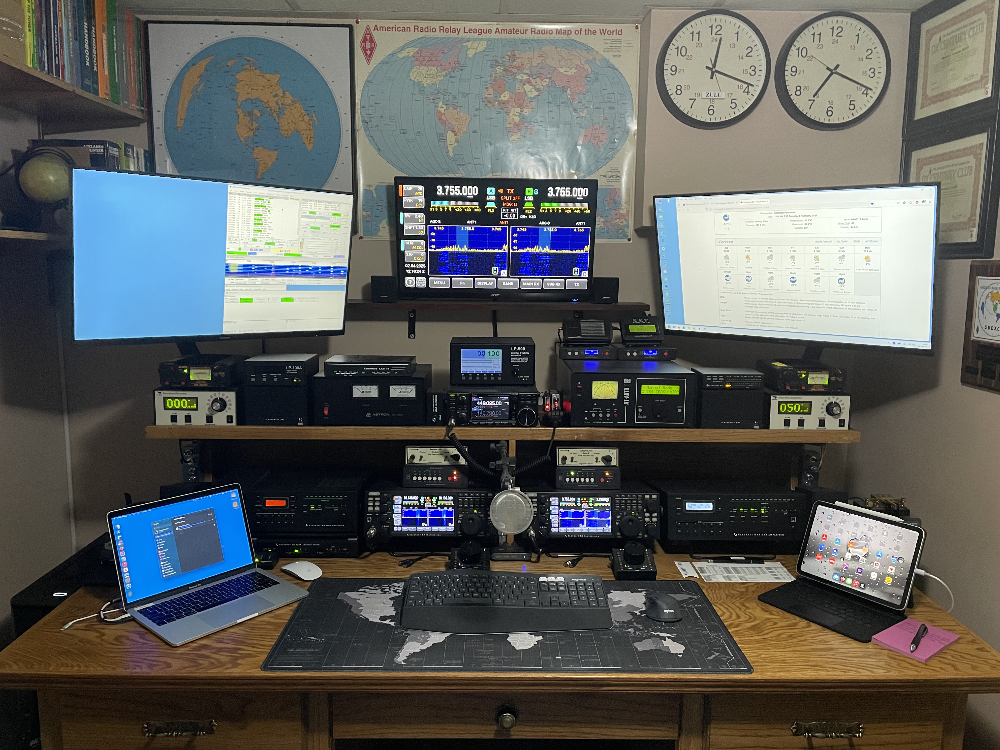
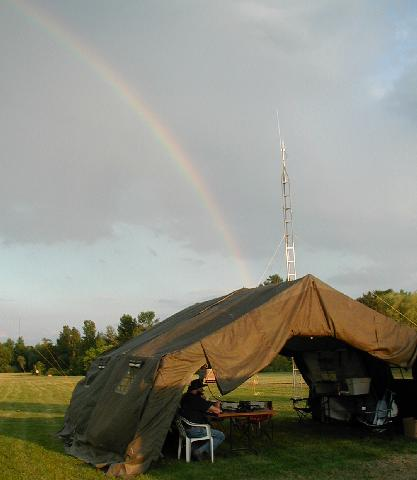
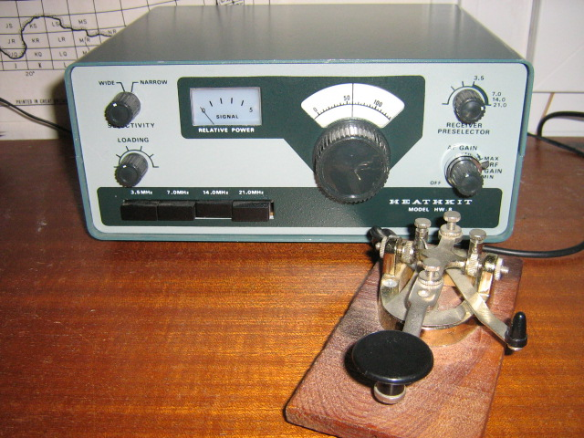
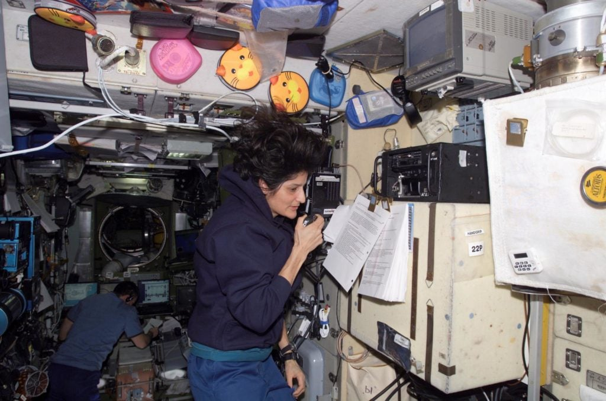
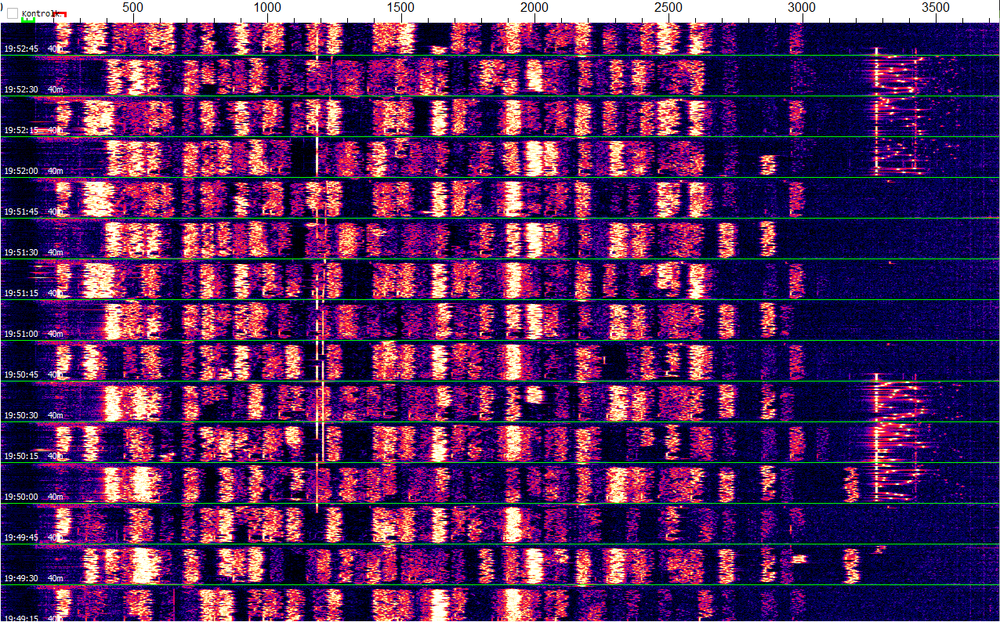

WELCOME!
Whether you're a seasoned DXer chasing rare contacts or just heard about ham radio for the first time — you've found your people. We're a group of radio enthusiasts in Renfrew County who love building antennas, bouncing signals off satellites, experimenting with digital modes, and having breakfast together. Come say hello on our Monday night net or at our next event — no callsign required to listen in.
UPCOMING EVENTS
NETS
Net InfoCLUB NET - MONDAYS AT 7:30PM ON ALL CLUB REPEATERS
Band Conditions
Did You Know?
Ham operators have bounced signals off the Moon. It’s called EME (Earth-Moon-Earth).
WHAT IS AMATEUR RADIO?
Amateur Radio (also known as Ham Radio) is a fascinating hobby and service that brings people together through wireless communication. Licensed operators use radio equipment to communicate across town, around the world, or even into space without the need for phones or the internet.
What makes Amateur Radio special:
- Connect with people globally using just radio waves
- Experiment with different communication technologies
- Provide essential communications during emergencies when other systems fail
- Build your own equipment and antennas
- Participate in contests and achievement awards
From casual conversations to technical experimentation, there's something for everyone in this diverse hobby that combines technology, communication, and community.
Check out our page on Getting Started in ham radio.


POPULAR MODES & ACTIVITIES

CW (Morse Code)
The original digital mode! Still popular for its efficiency and charm.

Satellite Communications
Talk through satellites orbiting Earth, including astronauts on the ISS.

Digital Modes
FT8, RTTY, PSK31 and more - computer-assisted communication modes.
Curious about getting started? Join us at a meeting or check out our licensing information!